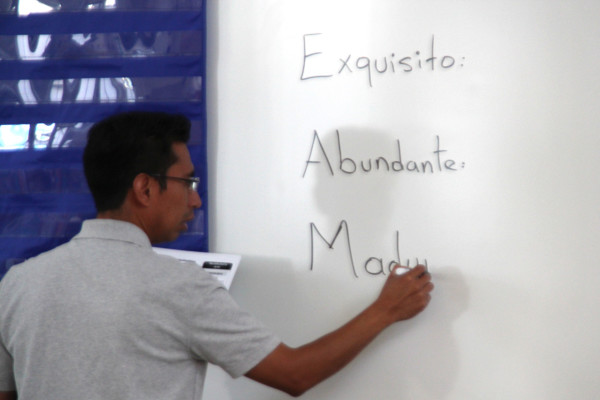

Data Visualization and Coding

Student Debt per State
Data Visualization
class project using d3, showing the average amount of student debt in each state

Global Oil Production
Data Visualization
class project using d3, showing the increase in production of oil over the past 15 years
Writing, Radio, Video

Canada, Mexico tighten trade ties while US grows skittish
Writing
CNBC.com, article exploring increased trade between Mexico and Canada, contrasted against current attitudes towards global trade in the U.S.

Meet the Man Behind the Scenes of the San Francisco Ethnic Dance Festival
Radio, Writing
KQED Public Radio, profile of a elderly dancer from San Francisco who has had a lasting impact on local dance culture

Richmond schools adapt to growing need for bilingual teachers
Writing, Photos, Graphics
Richmond Confidential, story about a local school district grappling with how to best serve their growing Spanish speaking population